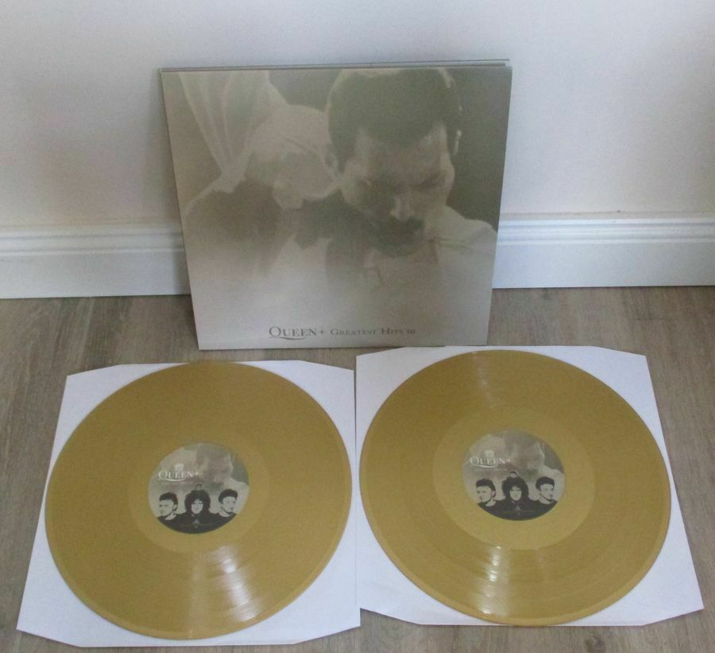
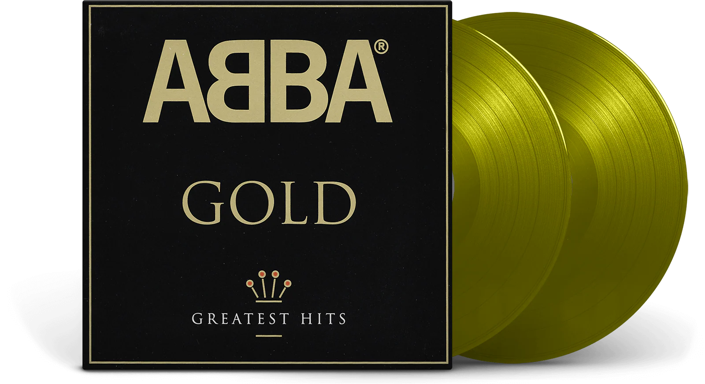

Šta je “Gold” sertifikat?
RIAA (SAD) uvodi “Gold Record” 1958. kao zvaničnu potvrdu visokih tiraža. Tipični kriterijumi u SAD su bili oko 500.000 primeraka za albume (pravila su se menjala tokom godina). U drugim zemljama postoje lokalne organizacije sa sopstvenim pragovima. Zlatna ploča (engl. Gold Record) nije poseban muzički format, već priznanje u muzičkoj industriji koje se dodeljuje izvođačima i izdavačima kada prodaja njihovog albuma ili singla dostigne određeni broj primeraka. Ideja je nastala u SAD sredinom 20. veka, u vreme kada su vinilne ploče bile dominantni nosači zvuka i kada su tiraži počeli da rastu do miliona primeraka. Sam termin “zlatna ploča” dolazi iz simboličnog gestа: da se fizički primerak albuma ili singla presvuče zlatnim slojem i urami kao nagrada izvođaču. Kasnije su se ustalila i zvanična pravila i certifikacioni sistemi, koji su standardizovali broj prodatih primeraka potreban da bi izdanje dobilo status zlata, platine ili dijamanta. Prve zlatne ploče Prva “zlatna ploča” uručena je 1942. pevaču Glennu Milleru za singl Chattanooga Choo Choo, nakon što je prodat u više od milion primeraka. To je bio marketinški gest izdavačke kuće RCA Victor, a ne zvanično priznanje. Zvanični sistem uveden je tek 1958. godine, kada je američka organizacija RIAA (Recording Industry Association of America) definisala jasne kriterijume. Od tada, nagrade su postale institucionalizovane i dobile veliki prestiž. Kriterijumi i vrednosti Kriterijumi za dodelu zlatnih ploča razlikuju se od zemlje do zemlje, jer zavise od veličine tržišta. SAD (RIAA): Gold Record: 500.000 prodatih primeraka albuma ili singla. Platinum Record: 1.000.000 primeraka. Diamond Record: 10.000.000 primeraka. Velika Britanija (BPI): Gold Record: 100.000 primeraka za albume, 400.000 za singlove. Nemačka (BVMI): Gold Record: 100.000 primeraka (od 2014). Srbija / bivša Jugoslavija: tokom 1970-ih i 1980-ih dodeljivane su zlatne ploče domaćim izvođačima kada bi prodali više od 50.000 primeraka (broj je varirao po periodu i izdavaču). To je bio ogroman uspeh za lokalno tržište. Simbolika i kulturni značaj Zlatna ploča ima dvojaku vrednost: Komercijalnu – potvrda da je izdanje dostiglo masovnu popularnost i visoku prodaju. Simboličku – statusni simbol izvođača i deo muzičke istorije. U mnogim slučajevima, zlatne ploče uramljene i presvučene pravim zlatnim slojem (ili bojom) dodeljivane su izvođačima na svečanim ceremonijama i često su krasile zidove studija, kuća slavnih muzičara i kancelarija izdavačkih kuća. Evolucija priznanja Kroz vreme, sistem nagrada se proširio: Platina (uvedena 1976. u SAD) označavala je još veći uspeh. Dijamantna ploča rezervisana je za izdanja sa desetinama miliona prodatih primeraka. Sa pojavom digitalnih servisa, streaming je počeo da se uračunava u prodaju, pa su i kriterijumi dodela prilagođeni digitalnom dobu. Primeri poznatih dobitnika Elvis Presley bio je prvi izvođač sa više zlatnih ploča, tokom 1950-ih i 1960-ih. The Beatles su u 1960-im postavili rekord sa serijom zlatnih i platinastih izdanja. Michael Jackson je sa albumom Thriller dobio ne samo zlato i platinu, već i dijamantni status – najprodavaniji album svih vremena. U bivšoj Jugoslaviji, zlatne ploče su dodeljivane grupama i pevačima poput Bijelog dugmeta, Zdravka Čolića, Lepe Brene i drugih čija su izdanja dostizala desetine ili stotine hiljada prodatih kopija. Danas Iako je tržište fizičkih nosača zvuka značajno opalo zbog digitalne distribucije i striminga, zlatne ploče i dalje postoje kao priznanje. Danas se prodaja računa kroz kombinaciju fizičkih kopija, digitalnih preuzimanja i streamova (npr. određeni broj strimova računa se kao jedna prodata jedinica). Uprkos promenama, simbolika je ostala ista: zlatna ploča je dokaz masovne popularnosti i muzičkog uspeha. Ona spaja industrijski prestiž, umetnički status i kolekcionarsku vrednost, pa i danas predstavlja jedno od najprepoznatljivijih priznanja u svetu muzike.
Katalog — Gold
| # | Omot | Izvođač | Naslov | Godina | Label | Katalog br. | Format | Nivo | Država | Stanje | Cena | Napomena |
|---|---|---|---|---|---|---|---|---|---|---|---|---|
| 1 |  |
Queen | Greatest Hits | 1981 | EMI | EMTV 30 | LP | Gold | UK | EX | — | Kompilacija |
| 2 |  |
ABBA | Gold (Greatest Hits) | 1992 | Polydor | 517 007-1 | LP | Gold | EU | NM | — | Kultna kompilacija |
Podelite stranicu
Deljenje sadržaja na Facebook-u:
Ako se dugme ne prikazuje, otvorite link: Podeli na Facebook-u